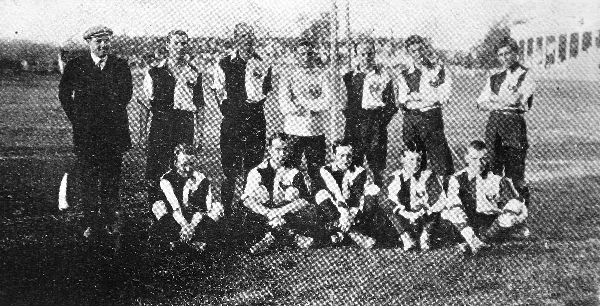

La selección de fútbol de Chile disputó su primer encuentro internacional ante la selección argentina el 27 de mayo de 1910. El encuentro, disputado en Buenos Aires, finalizó 3:1 a favor de Argentina, en un amistoso preparatorio para la disputa de la Copa Centenario Revolución de Mayo. Estaba integrada mayormente por jugadores de ascendencia británica.
Argentina: Matias "Tute" Vuillermoz ; Santiago Gallino ; Arturo Chiappe;Luis Vernett Amadeo, Haroldo Grant; Armando Ginocchio; Elías Fernández, Maximiliano Susán (Capitán), Juan Enrique Hayes, Manuel González y José Viale. Chile: L.C. Gibson; Luis Barriga, Andrés Hoyl ; Carlos Hormazábal , Henry Allen (Capitán), Próspero González; J.P. Davidson, Frank Simmons, Colin Campbell, J. H. Hamilton y Arturo Acuña. Incidencia: 30’ L.C. Gibson (Valparaíso F.C.) contuvo un penal a Armando Ginocchio (C.A. Newell's Old Boys). Sin embargo, existe una controversia con respecto a este encuentro debido a que, según una investigación reciente, la selección argentina no era tal, sino un combinado que se iba a medir con Alumni Athletic Club. El diario La Argentina informaba, en el programa de la semana del 25 de mayo de 1910, que se medirían «Combinados vs Chilenos»; además, el periódico aclara que «el team que jugará contra los chilenos es el combinado que iba a jugar contra Alumni». Es por esto que, si bien no hay duda de que este es el primer partido de la selección chilena de fútbol, no es el primer partido que debiese ser considerado como partido internacional clase 'A', el cual debiese ser el disputado el 29 de mayo contra Uruguay, que resultó 3:0 en favor de los uruguayos. De todos modos, la ANFP, la IFFHS, la RSSSF y la FIFA consideran al partido disputado el 27 de mayo de 1910 como el primer partido oficial internacional clase 'A' de la selección chilena. El primero de carácter oficial, lo jugó ante Uruguay el 2 de julio de 1916 en la misma ciudad durante el Campeonato Sudamericano 1916, cuando cayó 4:0, correspondiente al partido inaugural de la primera edición.
Alexis sanches
Es famoso por sus regates y velocidad tanto como por su juego ofensivo, ha recibido elogios tanto de periodistas deportivos, como de jugadores de diversos clubes de Europa.También fue premiado por el diario italiano La Gazzetta dello Sport como "el mejor jugador de la Liga Italiana".
Arturo vidal
Arturo Erasmo Vidal Pardo (San Joaquín, Santiago de Chile, 22 de mayo de 1987) es un futbolista chileno que se desempeña como centrocampista en el Inter de Milán de la Serie A de Italia. Además es internacional absoluto con la Selección de Fútbol de Chile desde 2007, de la cual es quinto máximo goleador histórico.
Claudio Bravo
Claudio Bravo Camus, pintor. Nació en Valparaíso, el 8 de noviembre de 1936, falleció el 4 de junio de 2011 en Taroudant, Marruecos. De familia de agricultores, vivió gran parte de su infancia en la zona rural de Melipilla. Comenzó a dibujar a los once años mostrando una clara vocación por las expresiones artísticas.